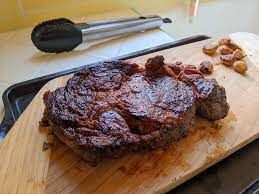

Steak

This looks like a ribeye but I don't really know. I just searched up r/steak in images and this popped up so I think it looks good enough to use as an image
- Ribeye
- Salt
- Pepper
- Olive Oil
- Season ribeye with salt and pepper
- Heat up iron-cast pan on high heat
- Slather ribeye in olive oil
- Put ribeye on pan
- Flip every thirty seconds until it looks its going to get burnt
- Let it sit for 7 minutes
- Eat